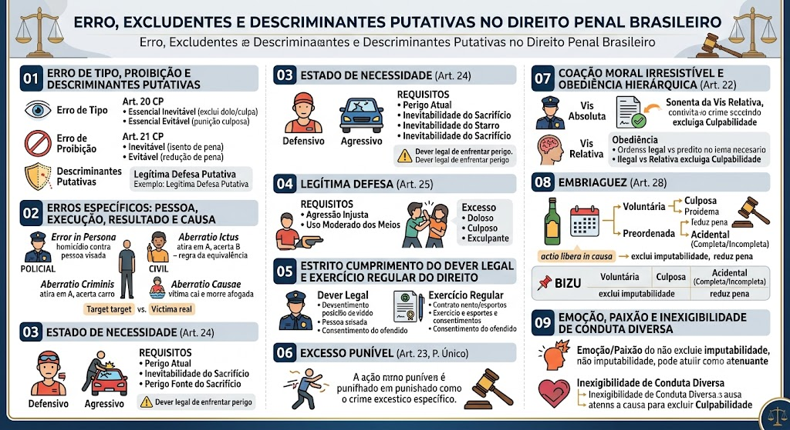

Teoria do erro (tipo, proibição, erro sobre a pessoa, execução, resultado e aberratio causae), causas de exclusão da ilicitude (estado de necessidade, legítima defesa, estrito cumprimento, exercício regular), causas de exclusão da culpabilidade (inimputabilidade, coação, obediência, embriaguez, inexigibilidade de conduta diversa), excesso punível e emoção/paixão.
Erro de Tipo, Proibição e Descriminantes Putativas
O agente desconhece um elemento do tipo penal (percepção equivocada da realidade).
Essencial inevitável (escusável): exclui o dolo e a culpa → fato atípico (absolvição).
Essencial evitável (inescusável): exclui o dolo, mas permite punição por crime culposo (se houver previsão).
Acidental: não exclui o crime, mas afasta qualificadora/agravante.
Exemplo: O caçador vê um vulto e atira pensando ser um javali, mas era seu filho. Sem possibilidade de prever → erro essencial inevitável = absolvição.
O agente conhece os fatos, mas acredita que sua conduta é lícita (desconhece a ilicitude).
Inevitável (escusável): exclui a culpabilidade → isenção de pena.
Evitável (inescusável): reduz a pena de 1/6 a 1/3.
Regra: O desconhecimento da lei é inescusável (art. 21, caput), mas o erro sobre a ilicitude, se inevitável, exclui a culpabilidade.
O agente imagina uma situação de fato que, se existisse, tornaria sua ação legítima (ex.: legítima defesa putativa).
Escusável (invencível): isento de pena.
Inescusável (vencível): afasta o dolo, responde por culpa imprópria (crime culposo, se previsto).
Erro sobre os pressupostos fáticos de uma causa de justificação (ligado às descriminantes putativas).
Erros Específicos: Pessoa, Execução, Resultado e Causa
O agente, por erro, atinge pessoa diversa da visada, mas a ofensa é ao mesmo bem jurídico (ex.: pensa que é A e mata B).
Consequência: Erro sobre a pessoa não isenta de pena. Considera-se como se o crime tivesse sido praticado contra a pessoa visada (tipo penal e qualificadoras são determinados pela pessoa visada).
Exemplo: Se o agente queria matar o policial (vítima visada) mas mata o civil (vítima real), responde por homicídio qualificado pelo motivo, se a intenção era contra policial.
Ocorre quando o agente, por erro na execução, atinge pessoa diversa da visada (ex.: atira em A, mas acerta B que estava ao lado).
Regra: Responde como se tivesse praticado o crime contra a pessoa visada (princípio da equivalência). Aplica-se a regra do erro sobre a pessoa.
Diferença crucial: No error in persona, o erro é sobre a identidade (A era B). Na aberratio ictus, o erro é na pontaria (acerta quem não queria). A consequência penal é a mesma (responde como se fosse a vítima visada).
O agente, por erro na execução, atinge bem jurídico diverso do pretendido (ex.: queria matar A, mas a bala atinge um bem patrimonial, danificando um carro).
Regra: Responde pelo crime efetivamente ocorrido, se for culposo (previsão legal). Se houver dolo no resultado diverso, aplicam-se as regras do concurso de crimes.
Exemplo: Atira em A para matar, mas erra e acerta o carro de B. Responde por dano culposo (se previsto) e pela tentativa de homicídio contra A.
O agente produz um resultado, mas por uma via causal diversa da imaginada (ex.: atira em A para matá-lo; A cai desacordado e morre afogado em um rio próximo).
Consequência: Não exclui o dolo, pois o resultado foi o pretendido. Aplica-se a teoria da equivalência dos antecedentes (art. 13) – responde pelo crime consumado, pois a causa do resultado era previsível e não rompe o nexo causal.
Estado de Necessidade (Art. 24)
Defensivo: O agente sacrifica bem jurídico do agressor para salvar bem próprio ou de outrem (ex.: atira no agressor para se salvar).
Agressivo: O agente sacrifica bem jurídico de terceiro inocente para salvar bem próprio ou de outrem (ex.: quebra a vidraça do vizinho para escapar de um incêndio).
a) Perigo atual e iminente (não passado ou futuro);
b) Perigo não causado voluntariamente pelo agente;
c) Inevitabilidade do sacrifício (não havia outro meio menos gravoso);
d) Proporcionalidade (razoabilidade) – o bem sacrificado não pode ser superior ao bem salvo (exige ponderação).
Excludente de ilicitude (art. 23, I).
Dever legal de enfrentar o perigo: O agente que tem dever legal de enfrentar o perigo (ex.: bombeiro, policial) não pode invocar estado de necessidade para se eximir da conduta.
Legítima Defesa (Art. 25)
a) Agressão injusta (contrária ao direito);
b) Agressão atual ou iminente (presente ou prestes a ocorrer);
c) Defesa de direito próprio ou de terceiro;
d) Uso moderado dos meios necessários para repelir a agressão.
Excludente de ilicitude (art. 23, II).
De terceiro: Qualquer pessoa pode agir em legítima defesa de outrem, mesmo sem autorização (art. 25, caput).
Sucessiva: Ocorre quando alguém, em legítima defesa, repele uma agressão, e o agressor, por sua vez, reage (excesso). A legítima defesa sucessiva é admitida para proteger o direito de quem está sendo vítima do excesso.
Excesso doloso: O agente excede intencionalmente os limites da defesa, respondendo pelo excesso (crime doloso).
Excesso culposo: O agente excede por imprudência, negligência ou imperícia, respondendo por crime culposo (se houver previsão legal).
Excesso exculpante (escusável): O excesso é decorrente de erro inevitável (descriminante putativa). Exclui a culpabilidade se inevitável, ou reduz a pena se evitável (aplica-se o art. 20, §1º).
Estrito Cumprimento do Dever Legal e Exercício Regular do Direito
O agente público (ou particular, em alguns casos) pratica o fato no exercício de um dever imposto por lei.
Requisitos:
- Existência de lei que imponha o dever;
- A conduta deve ser estritamente necessária para o cumprimento;
- Observância dos limites legais (não pode haver excesso).
Exemplos: Policial que efetua uma prisão em flagrante usando algemas (se necessário); oficial de justiça que arromba porta para cumprir mandado.
O agente pratica o fato no exercício de um direito reconhecido pelo ordenamento jurídico (ex.: direito de correção dos pais, direito de greve, direito de ação penal privada).
Consentimento do ofendido: É causa de exclusão da ilicitude quando o bem jurídico é disponível (ex.: lesões leves, dano a patrimônio alheio, desde que válido, livre e informado). O consentimento deve ser prévio ou contemporâneo ao fato. Para bens indisponíveis (vida), o consentimento não exclui a ilicitude (ex.: eutanásia).
Excesso Punível (Art. 23, Parágrafo Único)
O excesso doloso ou culposo nas excludentes de ilicitude (estado de necessidade, legítima defesa, estrito cumprimento, exercício regular) é punível.
Regra: O agente responde pelo excesso (crime praticado no excesso), não pela causa de justificação em si.
Exemplo: O policial, ao efetuar a prisão, desfere 10 tiros após o suspeito já estar imobilizado. Responde pelo excesso doloso (homicídio qualificado ou lesão).
Excesso exculpante: Se o excesso for inevitável (erro escusável), exclui a culpabilidade.
Coação Moral Irresistível e Obediência Hierárquica (Art. 22)
Coação Física (Vis Absoluta): O agente é usado como mero instrumento pela força física de outrem. Exclui a própria conduta (fato típico) → o coator responde pelo crime.
Coação Moral Irresistível (Vis Relativa): O agente é coagido por ameaça grave, não tendo liberdade de escolha. Exclui a culpabilidade (art. 22). O coator também responde pelo crime.
Consequência: Na coação moral irresistível, o coagido não comete crime (isento de pena); quem responde é o coator (art. 22, caput).
Quem pratica o fato em obediência a ordem hierárquica (superior) pode ter a culpabilidade excluída.
- A ordem deve ser legal e proferida por autoridade competente;
- Não deve ser manifestamente ilegal.
Ordem manifestamente ilegal: Se o subordinado cumpre ordem claramente criminosa (ex.: matar uma pessoa inocente), não exclui a culpabilidade, e tanto o superior quanto o subordinado respondem.
Relação: Obediência a ordem legal se confunde com o estrito cumprimento do dever legal.
Embriaguez (Art. 28)
Voluntária (por vontade própria): Não exclui a imputabilidade (art. 28, II). O agente responde pelo crime, mesmo que completo, pois agiu com actio libera in causa (ação livre na causa).
Culposa (acidental, sem querer): Se o agente ingere álcool sem intenção (ex.: por erro, força maior, caso fortuito), a embriaguez é acidental.
Decorre de caso fortuito ou força maior (ex.: medicamento que causa efeito inesperado; ingestão acidental de bebida alcoólica).
Completa: Se o agente estava completamente incapaz de entender o caráter ilícito do fato → exclui a imputabilidade (isento de pena, aplica-se medida de segurança, se necessário).
Incompleta: Se a capacidade estava apenas reduzida → redução de pena de 1/3 a 2/3 (sistema vicariante, equipara-se à semi-imputabilidade).
O agente se embriaga com a intenção de praticar o crime (dolo de se embriagar para ter coragem).
Consequência: Não exclui a imputabilidade e ainda configura circunstância agravante (art. 61, II, "l"), aumentando a pena.
📌 Voluntária → Não exclui (responde).
📌 Culposa/Preordenada → Não exclui; preordenada ainda agrava.
📌 Acidental Completa → Exclui imputabilidade (absolve ou medida de segurança).
📌 Acidental Incompleta → Reduz de 1/3 a 2/3.
Emoção, Paixão e Inexigibilidade de Conduta Diversa
A emoção (comoção súbita) e a paixão (estado permanente) não excluem a imputabilidade (art. 28, I).
Consequências:
- Não isentam de pena;
- Podem funcionar como atenuante (art. 65, III, "c" – relevante valor moral ou social) ou, em alguns casos, configurar o homicídio privilegiado (art. 121, §1º – diminuição de 1/3 a 2/3 por relevante valor moral ou social, ou domínio de violenta emoção).
Importante: Não se confunde com a inexigibilidade de conduta diversa, embora possam se conectar.
É o terceiro elemento da culpabilidade (ao lado da imputabilidade e da potencial consciência da ilicitude). Ocorre quando, diante das circunstâncias, não se poderia exigir que o agente agisse de outra forma.
Hipóteses clássicas:
- Coação moral irresistível (art. 22);
- Estado de necessidade (como excludente de culpabilidade, quando há inexigibilidade);
- Casos de medo, pavor ou perturbação psíquica intensa que, sem configurar doença mental, tornam impossível exigir conduta diversa (doutrina).
Efeito: Exclui a culpabilidade → o agente é absolvido, pois não se pode reprovar sua conduta.
Material de estudo: Erro, Excludentes e Descriminantes Putativas
Material complementar · Ver fonte no GitHub
Coação Moral Irresistível e Obediência Hierárquica (Art. 22)
Obediência Hierárquica (Art. 22, §2º)
Quem pratica o fato em obediência a ordem hierárquica (superior) pode ter a culpabilidade excluída.
Requisitos:
- A ordem deve ser legal e proferida por autoridade competente;
- Não deve ser manifestamente ilegal.
Ordem manifestamente ilegal: Se o subordinado cumpre ordem claramente criminosa (ex.: matar uma pessoa inocente), não exclui a culpabilidade, e tanto o superior quanto o subordinado respondem.
Relação: Obediência a ordem legal se confunde com o estrito cumprimento do dever legal.
Emoção, Paixão e Inexigibilidade de Conduta Diversa
Mapa-mental
